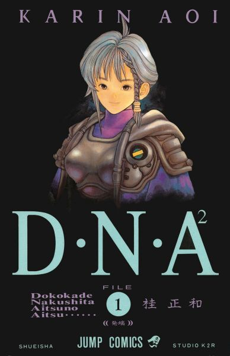

《私心推薦》
推薦之前
在推薦清單之前我還是想認真介紹一下這個網頁到底是在幹嘛?其實答案很簡單，就想我說的我起初只是想寫一個簡單暴力又陽春到爆的網頁而已，而當我開始想主題要做什麼時，剛好想起我看完I"S後，就一直很想 說些什麼，也不是要做什麼評論，但我就真的很想說些什麼。就這樣我開始寫網頁了，一開始還是抱著擺爛的心，但不知不覺就漸漸學習、修改，所以真有成就感。
推薦清單
其他漫畫
作畫過程紀錄
角色設計圖
漫畫
電影少女
電影少女作為開始，是一定得看的吧，雖然現在實體已經絕版，但假如可以有機會看到的話，真的很值得看看。

DNA2
DNA2應該是我最喜歡的系列了，還記得準備學測的那個暑假，有一次失眠時，就剛好拿起放在櫃子裡很久的DNA2來看，詳細劇情是什麼其實我也不是記得很清楚了， 但有些作品就是能帶給你一些特別的感覺，我也不知道怎麼描述那種感覺，可能是那太複雜或我口表太爛，但總之DNA2對我來說就是一個特別的作品。
Zetman 作畫紀錄
設定資料